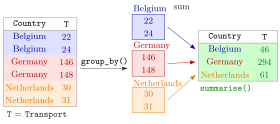

Grouped Summaries¶
Definition¶
A grouped summary computes one or more summary statistics separately for each group of rows. In dplyr it is written as
group_by(g) marks the rows that share a value of g as one group without changing the data; summarise() (or summarize(), the same function) then returns one row per group, with the grouping column and the new summary columns; ungroup() removes the grouping. Inside summarise(), n() is the number of rows in the group. count(g) is a shortcut for group_by(g) %>% summarise(n = n()), and across(cols, fun) applies the same function to several columns.
Interpretation¶
Grouped summaries follow the pattern split–apply–combine: split the table into groups, apply the same calculation to each group, and combine the results into a new, smaller table. "Total emissions per country" or "average wage per education level" are questions of this kind.

In the figure the six rows of Example 1 are split by Country into three groups of two. Each group's transport values are added, , and , and the three sums form the result: one row per country. The result no longer has a Year column, because a single row cannot hold two years.
The functions used inside summarise() must reduce a vector to a single number: sum(), mean(), median(), sd(), max(), n(). The rule for missing values still applies, so na.rm = TRUE is usually needed. With it, sum() adds only the available values, which gives 0 for a group where everything is missing; such a "total" is not a real zero, only an absence of data.
Grouping by a variable and averaging another is the data version of a conditional expectation: group_by(x) %>% summarise(mean(y)) estimates the mean of y given each value of x. count() is the tidyverse counterpart of table(), which builds a contingency table.
A frequent bug is forgetting ungroup(). After grouping by two variables, summarise() drops only the last one and leaves the table grouped by the first; a later summarise() or mutate() then works per group instead of over the whole table (Example 4). Calling ungroup() when a table is not grouped does no harm.
Key Results¶
group_by()+summarise()returns one row per group (per combination of values if there are several grouping variables), sorted by the grouping columns.summarise()andsummarize()are the same function;n()counts the rows of the current group.count(g)equalsgroup_by(g) %>% summarise(n = n()) %>% ungroup();count(g, sort = TRUE)lists the largest group first.across(Transport:Waste, ~ sum(.x, na.rm = TRUE))applies one function to several columns;.xstands for the current column, and column positions inacross()are counted without the grouping columns.- After
group_by(a, b) %>% summarise(…)the result is still grouped bya;ungroup()removes the grouping. sum(x, na.rm = TRUE)of a group with only missing values is0, whilemean(x, na.rm = TRUE)isNaN.
Examples¶
All examples use this small made-up extract of an emissions table:
library(tidyverse)
co2 <- tibble(
Country = c("Belgium", "Belgium", "Germany", "Germany", "Netherlands", "Netherlands"),
Year = c(2020, 2021, 2020, 2021, 2020, 2021),
Transport = c(22, 24, 146, 148, 30, 31),
Buildings = c(20, 21, 110, 115, 25, 24),
Waste = c(2.1, 2.3, 10.4, 9.8, 4.2, NA)
)
1. Totals per country.
co2 %>%
group_by(Country) %>%
summarise(Transport = sum(Transport),
Waste = sum(Waste, na.rm = TRUE),
n = n()) %>%
ungroup()
#> # A tibble: 3 × 4
#> Country Transport Waste n
#> <chr> <dbl> <dbl> <int>
#> 1 Belgium 46 4.4 2
#> 2 Germany 294 20.2 2
#> 3 Netherlands 61 4.2 2
The Netherlands waste total covers only 2020, because 2021 is missing: na.rm = TRUE sums the available values, so it is not a complete two-year total.
2. Counting rows per group. Which countries have waste emissions above 3, and in how many years?
co2 %>% filter(Waste > 3) %>% count(Country)
#> # A tibble: 2 × 2
#> Country n
#> <chr> <int>
#> 1 Germany 2
#> 2 Netherlands 1
Belgium does not appear at all: a group with no rows is not created, so count() never reports zero counts.
3. One function, several columns.
co2 %>%
group_by(Country) %>%
summarise(across(Transport:Waste, ~ sum(.x, na.rm = TRUE))) %>%
ungroup()
#> # A tibble: 3 × 4
#> Country Transport Buildings Waste
#> <chr> <dbl> <dbl> <dbl>
#> 1 Belgium 46 41 4.4
#> 2 Germany 294 225 20.2
#> 3 Netherlands 61 49 4.2
across(2:4, ~ sum(.x, na.rm = TRUE)) gives the same table: without the grouping column Country, the remaining columns are Year (1), Transport (2), Buildings (3) and Waste (4). Names such as Transport:Waste are safer, because positions change when a column is added.
4. Pitfall: a table that is still grouped. First the total of transport and buildings per country and year, then the average of those totals:
co2 %>%
group_by(Country, Year) %>%
summarise(Total = sum(Transport + Buildings)) %>%
summarise(Average = mean(Total))
#> `summarise()` has grouped output by 'Country'. You can override using the
#> `.groups` argument.
#> # A tibble: 3 × 2
#> Country Average
#> <chr> <dbl>
#> 1 Belgium 43.5
#> 2 Germany 260.
#> 3 Netherlands 55
The first summarise() dropped only Year from the grouping, so the second one averaged per country. Inserting ungroup() between the two gives the intended overall average, one row with .
Prerequisites¶
Related Concepts¶
- Pivoting Between Wide and Long Data
- Contingency Table
- Pipe Operator
- Relational Joins
- Conditional Expectation
Sources¶
- Programming for EOR · Week 4
- Lecture 4 script, Data Wrangling with the tidyverse & Visualisation with ggplot2: distinct() and count(); Grouped summaries with group_by() and summarize(); Week 4 solutions, exercises 3–5
Aliases: group_by(), summarise(), summarize(), ungroup(), count(), n(), across(), split-apply-combine, grouped summary Keywords: group_by(), summarise(), split-apply-combine, ungroup(), count()
Last updated: 10 November 2026 16:43
Grouped SummariesPivoting Between Wide and Long DataCore dplyr VerbsSummary Statistics in RMissing ValuesContingency TablePipe OperatorRelational JoinsConditional Expectation Given an Event